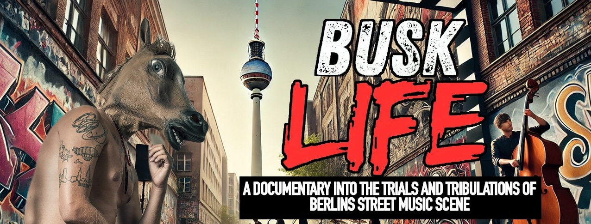

A practical creative path
I started filming live music gigs and quickly moved into weddings, commercials, and long-form documentary work. Along the way I spent time as a DJ and street performer in Berlin, which taught me how to build an audience from the ground up and stay adaptable when resources are thin.
That mix of real-world experience is still the foundation of my work today. I shoot primarily on the Sony A7C II, bring drones in when the story benefits from the perspective, and edit in DaVinci Resolve or Adobe Premiere Pro depending on the project needs. The goal is always the same: honest storytelling that reflects what it actually takes to live creatively.
Ways I Work With People
Video Production & Cinematography
Planning, shooting, and directing narrative or brand-driven films with a documentary-first eye.
Editing & Post-Production
Full edit workflows, sound polish, and story structure for long-form and short-form content.
Content Strategy & Distribution
Practical rollout plans for YouTube and online media, built around sustainable publishing.
Collaborations
Selective creative partnerships where the story has depth, clarity, and long-term value.
YouTube Channels
Three channels, each built for a different kind of viewer and story.

Carl Tomich
Personal documentaries and reflective commentary on travel, creativity, and work.
Visit Channel
Globe Travel Adventures
Evergreen travel guides and practical destination content for real trips.
Visit Channel
Carl Tomich Tech Reviews
Real-world gear and workflow reviews from a working filmmaker.
Visit ChannelFeature Documentaries
These films are the foundation of my long-form storytelling work.
Busking for Berlin (2014)
A feature documentary exploring life as a street performer in Berlin and what it takes to build a creative life from nothing.

Busk Life (2024)
A return to Berlin’s streets, tracking how the busking scene has evolved and the artists still shaping it.
Let’s talk about your project
If you’re a brand, filmmaker, or collaborator with a serious idea, I’m happy to hear it. Tell me what you’re building and how I can help.